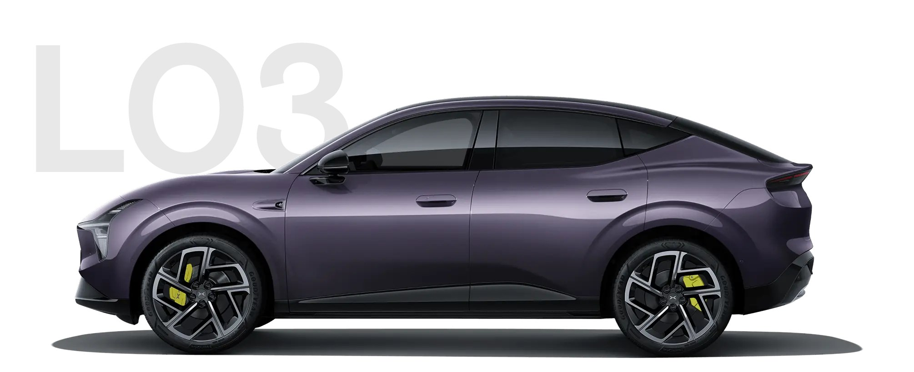

| 品牌 / 车型 | 售价（泰铢） | 动力 | 营销政策（10月官方） | 来源 |
|---|---|---|---|---|
| BYD Atto 1 最低价 | 399,900（原 429,900 起） | 纯电 | 10.10 两日促销 10/10–11：直降 60,000 → 399,900；全泰纯电价首次跌破 40 万 | CAR250 |
| BYD Seal 6 EV | 699,900 / 799,900 / 949,900 | 纯电 | 10.10 两日：Standard −100,000 → 699,900、Dynamic −100,000 → 799,900；Premium 949,900 不参与 | Autolife |
| BYD Atto 3 | 609,900（原 669,900） | 纯电 | 10.10 两日：直降 60,000（泰国产车型） | Autolife |
| BYD Atto 2 | 569,900（原 659,900） | 纯电 | 10/08 官方降价 90,000（永久调价，非闪购） | CAR250 |
| BYD Dolphin | 459,900 – 529,900 | 纯电 | 10/03–04 两日：直降 70,000（泰国产车型） | Autolife |
| BYD M6 | 799,900（原 849,900） | 纯电 MPV | 10/08 降价 50,000；10.10 两日促销延续同价 | Autolife |
| BYD Sealion 7 MY2026 | 1,099,900 – 1,349,900 | 纯电 | 10/03–04 两日：直降 100,000（CBU 中国） | Autolife |
| BYD Sealion 6 DM-i MY2026 | 799,900 – 969,900 | 插混 | 10/03–04 两日：直降 80,000（泰国产车型） | Autolife |
| Geely EX5 | 759,000 – 899,000 | 纯电 | 10/01–31 全月：直降 50,000（CBU 中国） | Autolife |
| CHERY V23 | 699,900 – 839,900 | 纯电 | 即日–10/31：直降 60,000 | Autolife |
| JAECOO 6 EV | 799,000 – 949,900 | 纯电 | 10/01–31：直降 50,000（泰国产车型） | Autolife |
| Mazda CX-6e 新上市 | 1,259,000 – 1,299,000 | 纯电 | 10/07 上市即交付（CBU 中国）；同门 Mazda 6e 累计订单已超 1,500 辆 | Autolife |
| Kia Carnival HEV | 2,299,000 – 2,599,000 | 混动 MPV | 10 月：直降 200,000 | Autolife |
| Nissan Kicks e-POWER VL | 799,900 | 混动 | 10 月降价 50,000；水灾受灾客户最高再优惠 130,000 | Autolife |
| Honda Accord G11 e:HEV MY2026 | 1,479,000 – 1,764,000 | 混动 | 10 月：0% 利率 + Exclusive Care 5 年 | Autolife |
| Honda CR-V e:HEV | 1,409,000 – 1,749,000 | 混动 | 10 月：0% 利率 + Exclusive Care 5 年 | Autolife |
| Tesla Model Y L | 1,999,000 | 纯电 | 10 月更新版：加装 Acceleration Booster（0–100 km/h 4.5 秒） | Autolife |
| Wuling Eksion EV 新上市 | 799,000 – 859,000 | 纯电 7 座 SUV | 10/01 官方上市（CBU 中国），首款进入 80 万级 7 座纯电 | Autolife |
| XPENG L03 新上市 | 899,000 / 989,000 / 1,189,000 | 纯电 | 10/01 上市，10 月中开始交付；整车 5 年/12 万 km + 高压电池 8 年/16 万 km + 1 年一类险 + 便携充电枪 + 24h 救援 5 年 + MOBILIFE 3,000 分 | Autolife |
| XPENG G6 / X9 | 1,189,000 起 / 2,539,000 起 | 纯电 | 本期未检索到官网新促销公告（价格核验日 2026-09-23，建议本地团队复核） | Checkraka |
正面信号：
风险点：